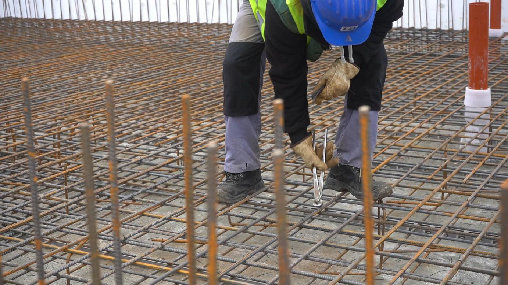
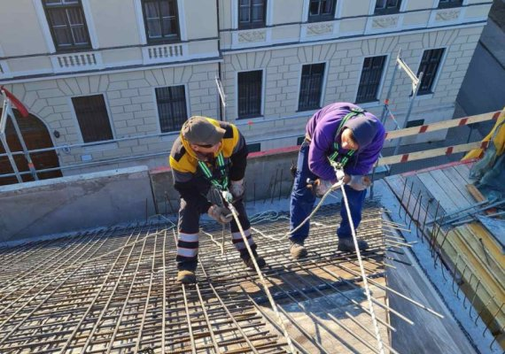

A Csak a beton! Kft. munkatársai a vasbeton szerkezetek építésében több éves szakmai tapasztalattal rendelkeznek. Elsősorban társasházak, irodaházak, lakóparkok vasbeton szerkezeteinek építésével foglalkoznak, Budapesten és Pest megyében, de ezen kívül számos vidéki nagyvárosban is végeznek ilyen jellegű munkálatokat. A vállalkozás folyamatosan bővül szakértelem és állomány terén is, munkájukat nagy odafigyeléssel és magas szakértelemmel végzik.
A monolit vasbeton szerkezetek megépítése több elemből tevődik össze, ilyenkor kerül megépítésre például a lábazat, vasbeton oszlopok és vasbeton falak, ezt követően jöhetnek az olyan munkafázisok, mint a betonacél szerelés, födém zsaluzás, betonozás, és kizsaluzás, illetve a kizsaluzást követő utómunkálatok. A szerkezetépítési feladatok több munkafolyamatból állnak, melyeket érdemes olyan szakemberekkel végeztetni, akik több éves tapasztalattal rendelkeznek a vasbeton szerkezetek megépítésében.
